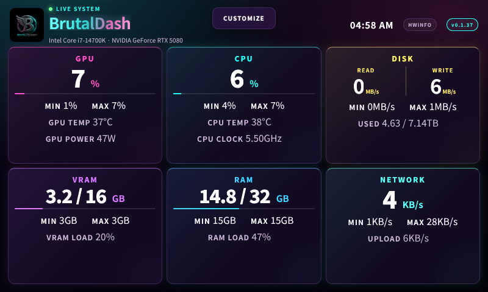
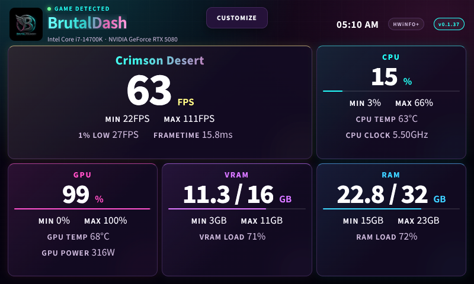
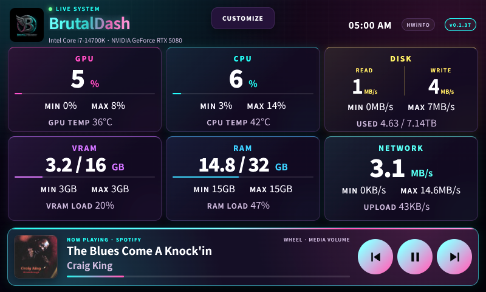
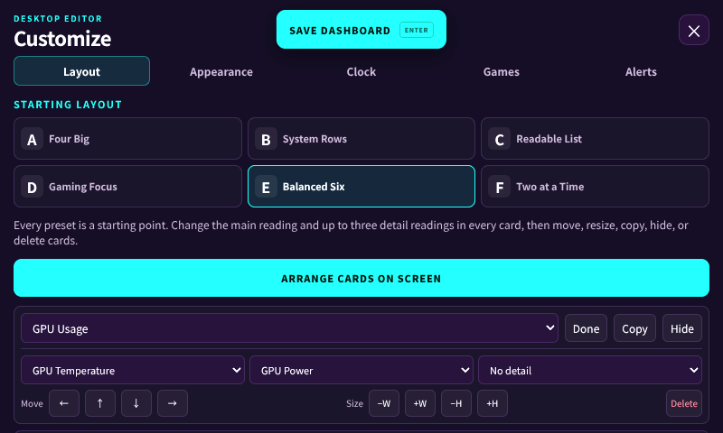
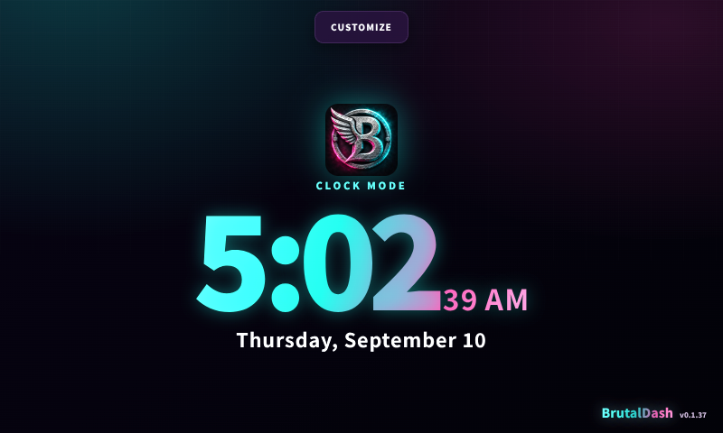

BrutalFoundry presents
BrutalDash
Turn your Car Thing into a live PC performance command center. BrutalDash pairs native Windows telemetry and in-game FPS with configurable dashboards, PC media controls, and a useful clock when the PC is unavailable.
What it does
LIVE TELEMETRYCPU, GPU, RAM, VRAM, disk and network readings, including session min and max values.
GAME READYAutomatic game detection with FPS, frametime and 1% low monitoring through its bundled collector.
MAKE IT YOURSLayouts, card arrangements, themes, compact mode, alerts and saved dashboard settings.
PC MEDIAArtwork, track details, progress and Windows media controls in a compact drawer.
OPTIONAL HWiNFONative Windows telemetry works out of the box. HWiNFO adds expanded sensor detail when available.
CLOCK MODEDigital and analog clock faces make the device useful even when it is disconnected.
Running on a real Car Thing




